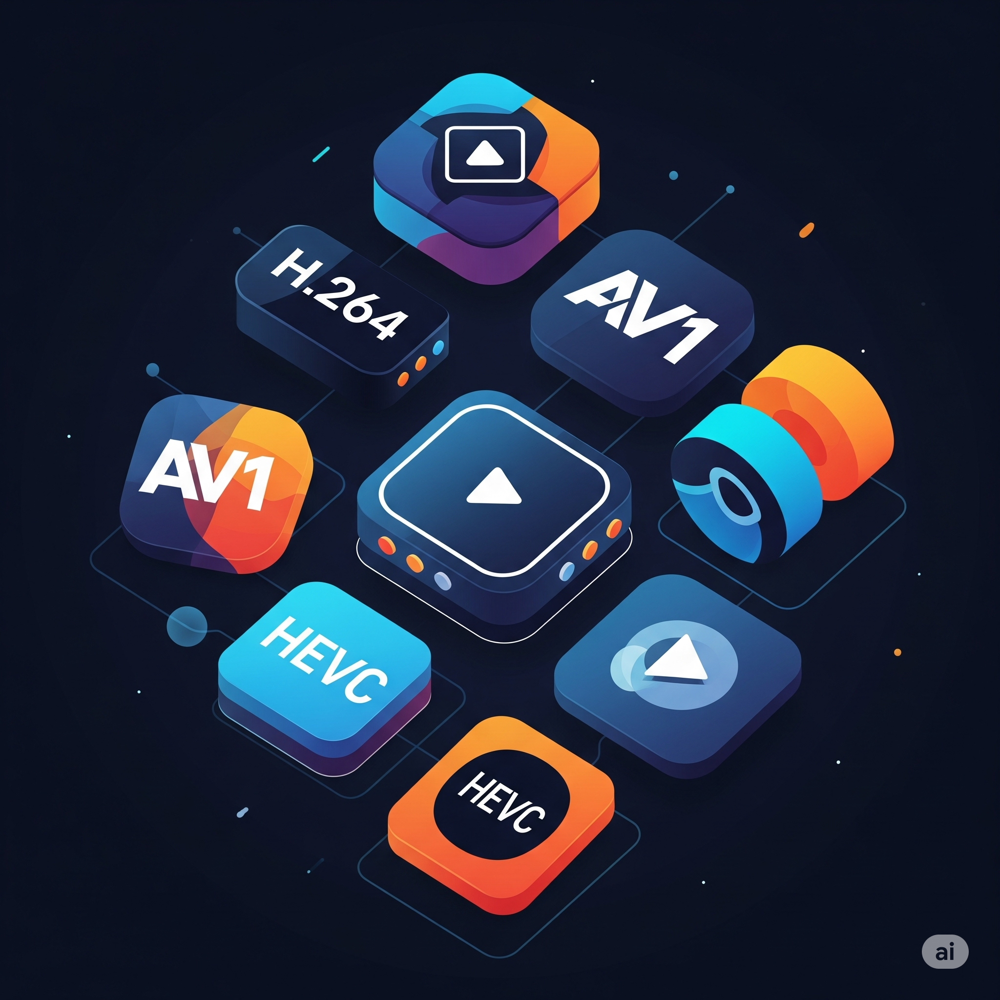

A Lógica do 'If/Else' na Construção de uma Narrativa em um Videoclipe
Publicado em 29 de Junho de 2025 • Leitura de 5 min

O que um programador e um editor de vídeo têm em comum? À primeira vista, quase nada. Um lida com lógica, dados e algoritmos; o outro, com emoção, ritmo e imagem. Mas e se eu te dissesse que a estrutura fundamental de um bom software e de uma boa história é surpreendentemente similar?
Neste artigo, quero explorar como a lógica condicional 'if/else' (se/senão), um dos pilares da programação, é a ferramenta que, de forma invisível, usamos o tempo todo na ilha de edição para construir uma narrativa, guiar a emoção do espectador e dar significado a cada corte de um videoclipe.
1. O que é if/else na Programação?
Na sua essência, o if/else é uma tomada de decisão baseada em uma condição. SE (if) a previsão do tempo diz que vai chover, ENTÃO eu pego um guarda-chuva. SENÃO (else), eu o deixo em casa. É uma escolha entre dois caminhos baseada em uma condição.
se (personagem.estaFeliz) {
tocarMusicaAlegre();
} senao {
tocarMusicaTriste();
}
2. O if/else na Ilha de Edição
A Escolha da Reação
SE a letra da música diz 'meu mundo desabou', ENTÃO o corte mostra um close-up no rosto triste do ator. SENÃO, se a letra é sobre superação, o corte mostra o mesmo ator se levantando, com o rosto determinado.
A Escolha do Ritmo
SE a batida da bateria é forte e marcada, ENTÃO o corte entre as cenas é seco e rápido, acompanhando o impacto sonoro. SENÃO, se o som é um violino suave e contínuo, a transição é uma fusão lenta (dissolve), conectando as cenas de forma fluida.
A Escolha da Narrativa
SE queremos mostrar que o personagem está se sentindo perdido, ENTÃO usamos planos de câmera mais abertos, mostrando sua solidão na vastidão do cenário. SENÃO , se queremos mostrar sua confiança, usamos planos mais fechados e contra-plongée (de baixo para cima) para engrandecê-lo.
3. Por que Pensar Assim te Torna um Editor Melhor?
-
Edição com Intenção: Pensar em
'if/else'te força a justificar cada corte. Não é mais 'vou cortar aqui porque parece legal', mas sim 'vou cortar aqui PORQUE a condição X foi atendida, e isso serve ao propósito Y da história'. - Eficiência e Foco: Essa estrutura lógica ajuda a navegar por horas de material bruto. Você não está procurando por 'qualquer imagem boa', está procurando pela imagem específica que satisfaz a condição daquele momento da música.
- Comunicação Clara: Facilita a comunicação com diretores e clientes. Você pode explicar suas escolhas de edição de forma lógica: 'Eu escolhi este take porque a condição era mostrar vulnerabilidade'.
Conclusão
No final das contas, tanto o programador quanto o editor são arquitetos de experiências. Ambos usam estruturas lógicas para guiar o usuário (ou espectador) por uma jornada com começo, meio e fim. O if/else deixa de ser apenas uma ferramenta técnica e se torna uma poderosa ferramenta de storytelling. Da próxima vez que assistir a um videoclipe, tente enxergar as condições por trás de cada corte. Você pode se surpreender com a lógica que existe por trás da emoção.